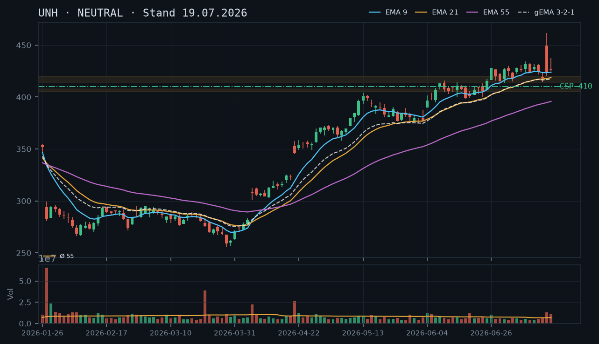
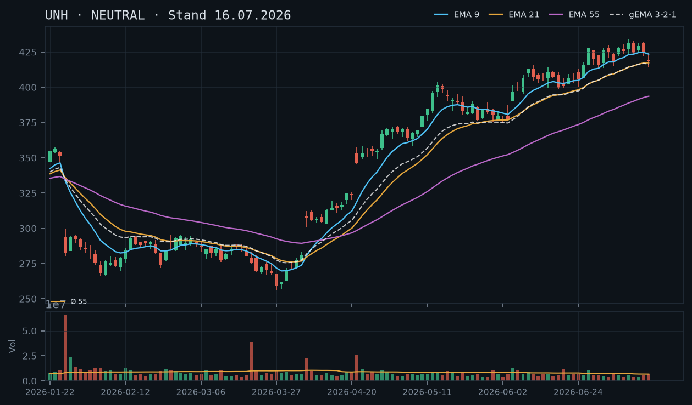
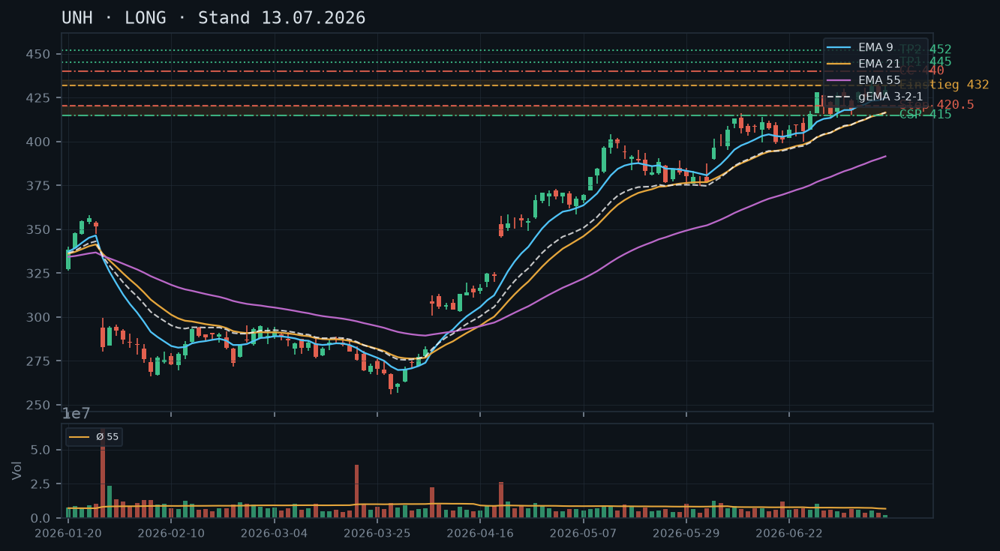
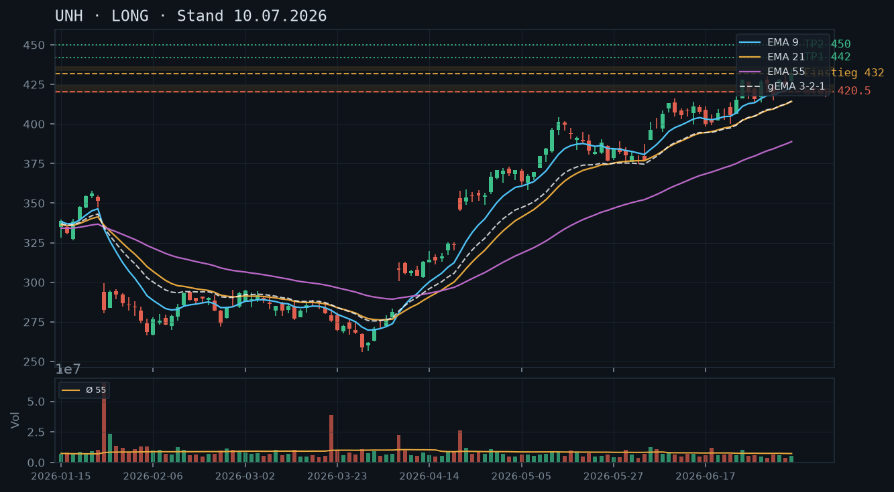
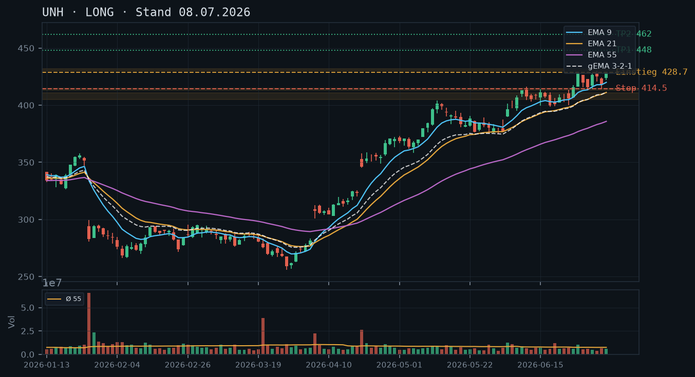

UNH konsolidiert nach dem Earnings-Gap (16.07.) weiterhin im Bereich 418–437 ohne klare Richtungsentscheidung – kein valides direktionales Trade-Setup, aber ein technisch sauber ableitbarer CSP unterhalb der Post-Earnings-Unterstützung ist vertretbar.

Der langfristige Aufwärtstrend seit dem März-Tief (255,97 am 27.03.) ist strukturell intakt: höhere Tiefs (259, 269, 281, 415) und höhere Hochs bis zum Earnings-Gap-Hoch bei 461,62 (16.07.). Allerdings ist die kurzfristige Struktur nach dem Earnings-Spike unklar – UNH hat das Intraday-Hoch 461,62 nicht verteidigt und schloss am 16.07. lediglich bei 423,38, was einem Schlusskurs nahe dem unteren Bereich des Earnings-Tages entspricht. Der 17.07. bestätigte mit Hoch 437,47 und Schluss 426,09 die Konsolidierung. Kurzfristig existieren keine bestätigten neuen Hochs nach dem 16.07., was die Trendstruktur auf Tagesbasis in einer Warteposition hält.
Der 16.07. ist eine klassische Long-Shadow-Kerze (bearisher Abschluss nach Earnings-Spike): Eröffnung 449,39, Hoch 461,62, Tief 420,37, Schluss 423,38 – eine massive Doji-artige Ablehnung mit oberer Lunte von ~38 Punkten. Der 17.07. zeigt eine bullische Erholung (Schluss 426,09 über Eröffnung 426,72 nur marginal, aber Hoch 437,47 getestet), kann jedoch die Earnings-Kerze nicht überwinden. Das Muster insgesamt signalisiert Absorption und Unsicherheit – kein klares Reversal, aber auch keine Kapitulation nach unten.
EMA9 (423,99), EMA21 (418,64) und EMA55 (395,84) sind geordnet bullisch (9 > 21 > 55), der gema_321 liegt bei 417,52 – der Kurs notiert exakt am EMA9 (423,38 ≈ 423,99). Die EMA-Struktur stützt den übergeordneten Aufwärtstrend, liefert aber keinen neuen Long-Impuls, solange der Kurs am EMA9 klebt und nicht dynamisch abhebt. Der Abstand EMA9 zu EMA55 beträgt ~28 Punkte – keine extreme Überdehnung, normaler Aufwärtsmodus.
| Richtung | Kein Trade |
| Einstieg | Kein valides direktionales Setup – Ausbruch über 437,47 (17.07.-Hoch) abwarten für Long-Trigger; Short erst unterhalb 418,52 (15.07.-Tief) relevant |
| Stop | None |
| Ziel | None |
| CRV | None |
Die bullische EMA-Struktur und der intakte Makro-Aufwärtstrend sprechen weiterhin für den Verkauf von Cash-Secured Puts. Ein Covered Call ist mangels Aktienbestand (0 Aktien im Depot laut IBKR) nicht möglich – ein Naked Call wird bei moderater Risikotoleranz nicht empfohlen. Der CSP profitiert von der Post-Earnings-Beruhigung (IV-Normalisierung läuft), sollte aber mit ausreichend Puffer zur volatilen Earnings-Kerze platziert werden.
| Geschäft | Cash-Secured Put |
| Strike | 410.0 |
| Puffer | 3.2 % |
| Zone | unter Post-Earnings-Intraday-Tief 420,37 (16.07.) und Swing-Tief 15.07. bei 414,37 – Zone 414–420 als erste Unterstützung |
| Verfall bis | 2026-07-25 (6 Tage) |
| Begründung | Der Strike 410 liegt klar unterhalb des Post-Earnings-Tiefs vom 16.07. (420,37) und unterhalb des 15.07.-Swing-Tiefs (414,37). Die Zone 414–420 hat sich als Unterstützungscluster etabliert (Tief 16.07., Tief 15.07., Tief 06.07. bei 415,05 – mehrfach getestet und gehalten). Der Strike 410 bietet damit die gesamte Zone als Puffer vor sich. Puffer zum aktuellen Kurs 423,38: ca. 3,2%. Ein Andienungsszenario zu 410 wäre technisch als attraktive Kaufzone zu werten – die Zone um 414–420 wäre dann bereits unterschritten, was einen substanziellen Trendbruch bedeuten würde, aber 410 liegt noch über dem EMA21 (418,64)... Korrekt: Bei Andienung zu 410 wäre der EMA21 bereits unterschritten, daher ist die Qualität der Andienung grenzwertig akzeptabel. Der Anwender sollte in der Optionskette prüfen: Prämie am Strike 410 mit Verfall 25.07. (Restlaufzeit 6 Tage – IV nach Earnings dürfte gefallen sein, daher Prämie realistisch prüfen ob mindestens 0,5% des Strikes = ~2,05$ erzielbar), Bid-Ask-Spread auf Liquidität (UNH ist liquide, Spreads typisch eng), Delta idealerweise zwischen -0,15 und -0,25. |
Die Analysen vom 10.07. und 13.07. empfahlen LONG mit Stop-Buy über 432 und Ziel 450–452. Dieser Long-Trigger wurde am 15.07. intraday angerissen (Hoch 424,11 – noch nicht ausgelöst) und dann durch den Earnings-Spike am 16.07. quasi mit einem Gap überholt: UNH eröffnete bei 449,39 und erreichte 461,62. Das Kursziel 452 wurde damit überschossen. Die Analyse vom 16.07. deklarierte korrekt NEUTRAL auf Basis veralteter Pre-Earnings-Daten. Bestätigt: Der Long-Bias war strukturell richtig; die Targets wurden durch den Earnings-Katalysator erreicht und übertroffen. Verworfen: Der CSP-Strike 415 aus der 13.07.-Analyse ist durch den Earnings-Move jetzt als unterste Stützzone relativiert – 415 hat am 16.07. intraday gehalten (Tief 420,37), was die Zone sogar bestätigt, sie aber enger macht als erwartet. Der CC-Strike 440 aus der 13.07.-Analyse wäre durch den Earnings-Spike ab 449,39 sofort ausgebucht worden – gut, dass er als optionale Ergänzung kommuniziert war.
Der primäre Aufwärtstrend ist seit dem panischen Verkaufstag am 20.03.2026 (rel. Volumen: 3,93 – größter Volumentag im Datensatz, Schluss 275,59) intakt. Die Sequenz höherer Tiefs ist klar: 255,97 (27.03.) → 268,05 (26.03., unbestätigter Bereich) → 261,79 (30.03.) → 363,87 (05.05., lokales Tief nach Hochphase) → 376,86 (26.05.) → 399,53 (17.06.) → 415,05 (06.07.) → 414,37 (15.07.) → 420,37 (16.07.-Earnings-Tief).
Die Zone 414–420 ist damit dreifach bestätigt (15.07., 16.07. und 06.07.) und stellt die kritische kurzfristige Unterstützung dar. Darunter liegt EMA21 bei aktuell 418,64 – dieser sinkt täglich leicht, da der Kurs seit dem 16.07. seitwärts tendiert. Der nächste relevante Support darunter wäre die Zone um 405–408 (Konsolidierungs-Cluster Juni, Tiefs 17.06./18.06.). Widerstand: Das Earnings-Hoch 461,62 ist der klare Deckel; darunter liegt das 17.07.-Hoch 437,47 als nächste relevante Marke.
Kurzfristiges Bild: UNH befindet sich in einer Post-Earnings-Digestion. Das Volumen normalisiert sich: 16.07. mit rel. Volumen 1,96, 17.07. mit 1,58 – beide noch über Schnitt, aber abnehmend. Ein Muster aus zwei Kerzen reicht nicht für eine neue Trendbestimmung.
Die Earnings-Kerze (16.07.) ist technisch eine bearishe Umkehrkerze im Kontext des Spikes: Eröffnung 449,39, Hoch 461,62, Schluss 423,38. Der Körper ist deutlich bärisch (Eröffnung >> Schluss), die obere Lunte dominiert. Im Kontext eines Earnings-Gaps ist diese Formation als 'Shooting Star' oder 'Bearish Engulfing nach Gap' zu lesen – sie signalisiert, dass die Bullen den Spike nicht halten konnten. Gleichwohl: Der Schluss bei 423,38 liegt über dem Pre-Earnings-Schlusskurs vom 15.07. (418,52), was grundsätzlich bullisch bleibt.
Der 17.07. (Hoch 437,47, Schluss 426,09) zeigt einen gescheiterten Recovery-Versuch bis 437,47 – dieser Level (17.07.-Hoch) ist damit der nächste kurzfristige Widerstand. Das Schlussniveau 426,09 liegt im Niemandsland zwischen 420-Support und 437-Widerstand.
EMA9: 423,99 | EMA21: 418,64 | EMA55: 395,84 | gema_321: 417,52. Die Reihenfolge ist geordnet bullisch, keine Kompressions-Artefakte. Der Kurs (423,38 laut IBKR, entspricht dem letzten CSV-Schluss) notiert exakt zwischen EMA9 (423,99) und dem letzten Schlusskurs – quasi am EMA9 klebend. Dies ist eine neutrale Position: kein Rückfall unter EMA9 (noch), aber kein Ausbruch nach oben.
Kritischer Level: Ein Tagesschluss unter EMA9 (~424) wäre ein erstes Warnsignal, ein Schluss unter EMA21 (~418–419) ein stärkeres Negativ-Signal und würde die Support-Zone 414–420 erneut testen. Der gema_321 bei 417,52 konvergiert mit der EMA21 – das ist ein Konfluenz-Support-Cluster bei ca. 417–419, der kurzfristig als letzter Puffer vor einem tieferen Rücksetzer gilt.
Setup A – Long-Ausbruch (bevorzugt bei Ausbruch): Einstieg per Stop-Buy über 437,50 (über 17.07.-Hoch 437,47). Stop bei 420,00 (unter Post-Earnings-Tief 420,37). Ziel 1: 450,00 (runde Marke, CRV ca. 0,7:1 – unattraktiv). Ziel 2: 461,62 (Earnings-Hoch, CRV ca. 1,4:1 – grenzwertig). Fazit: Setup erst bei höherem Ziel valide – kein Trade empfohlen.
Setup B – Long-Pullback (falls Support hält): Einstieg bei 420–421 (Rückkehr in Support-Zone, Bestätigung durch Reversal-Kerze). Stop bei 413,00 (unter 15.07.-Tief 414,37). Ziel 437,47 (17.07.-Hoch). CRV: ca. 2,0:1 – vertretbar, aber Setup erfordert aktives Monitoring und tritt nur bei Rücksetzer ein.
Setup C – Short (nur bei Breakdown): Einstieg per Stop-Sell unter 413,00 (unter 15.07.-Tief). Stop bei 423,00. Ziel 405,00 / 399,00. CRV ca. 1,1:1 / 1,75:1. Gegen den übergeordneten Trend – nur für sehr kurzfristige Trader; nicht empfohlen.
Aktuell bevorzugt: Kein direktionaler Trade. Die Post-Earnings-Konsolidierung ohne klares Ausbruchssignal rechtfertigt keinen aktiven Einstieg. Abwarten bis Ausbruch über 437,47 oder Pullback in Support-Zone.
Ausgangslage: Laut IBKR-Snapshot (12:09 Uhr, 19.07.2026) sind keine Aktien und keine Optionspositionen in UNH vorhanden. Kurs zum Snapshot-Zeitpunkt: 423,38. Der Snapshot ist tagesfrisch und als aktuell zu bewerten.
Covered Call: Nicht möglich, da 0 Aktien im Bestand. Ein Naked Call würde bei moderater Risikotoleranz das Risikoprofil sprengen (unbegrenzte Verlustseite nach oben, Earnings-Hoch 461,62 noch im Raum) – daher explizit nicht empfohlen.
Cash-Secured Put – Strike 410, Verfall 25.07.2026:
Alternativer CSP-Strike 415 (aggressiver): Der Strike 415 liegt innerhalb der Unterstützungszone 414–420, was laut Prinzip der Zonen-Herleitung (Strike soll Zone als Puffer VOR sich haben) suboptimal ist. Dieser Strike wird daher nicht als Primärempfehlung ausgewiesen, wäre aber für Anwender mit Präferenz für höhere Prämien diskutierbar – mit dem klaren Hinweis, dass Andienung bei 415 wahrscheinlicher ist und die Zone 414–420 dann bereits gebrochen wäre.
WICHTIG: Diese Analyse basiert auf Daten bis 15.07., einen Tag vor der Q2-Zahlenveröffentlichung von heute Morgen (16.07.) – die Aktie notiert vorbörslich bereits rund 7% höher bei ~448$. Die hier beschriebene technische Lage (Long-Trigger ausgelöst und noch am selben Tag ausgestoppt) ist durch das Earnings-Ereignis überholt und sollte NICHT als aktuelle Handelsgrundlage verwendet werden.

Auf Basis der Daten bis 15.07. (vor den Zahlen): Der Long-Trigger der 13.07.-Analyse (432,00) wurde am 14.07. mit einem Hoch von 432,15 knapp ausgelöst, doch bereits am 15.07. fiel der Kurs auf ein Tief von 414,37 – unter den Stop (420,50) und sogar unter den in derselben Analyse empfohlenen CSP-Strike (415,00). Auslöser war laut Berichterstattung sektorweite Vorsicht vor den eigenen Zahlen, verstärkt durch schwache Peer-Ergebnisse (Elevance Health) und eine ausgeweitete DOJ-Untersuchung. Diese gesamte Struktur ist durch die heutige Kursreaktion (vorbörslich +7%) bereits überholt.
14.07.: Hoch 432,15 (Trigger erreicht), Schluss 425,19 – erste Schwäche trotz Trigger. 15.07.: Tief 414,37, Schluss 418,52 – Stop-Niveau unterschritten, Position (falls eröffnet) ausgestoppt. Diese Kerzenfolge ist die letzte vor dem Earnings-Ereignis von heute und hat für die aktuelle Kurslage keine Aussagekraft mehr.
Stand 15.07.: EMA9 (423,49) > EMA21 (417,35) > EMA55 (393,66), noch bullisch, aber der Kurs war bereits unter EMA9 gefallen. Mit der vorbörslichen +7%-Reaktion auf die Zahlen sind diese EMA-Abstände ohnehin nicht mehr aktuell – die EMAs werden sich mit den neuen Kursdaten deutlich verschieben.
| Richtung | Kein Trade |
| Einstieg | Kein valides Setup auf Basis veralteter Vor-Earnings-Daten – nach Vorliegen aktueller Nachbörsen-/Vorbörsen-bestätigter Kursdaten neu bewerten |
| Stop | None |
| Ziel | None |
| CRV | None |
Jede Stillhalter-Empfehlung auf Basis der 15.07.-Daten wäre irreführend: Die implizite Volatilität dürfte nach der Zahlenveröffentlichung stark gefallen sein (IV-Crush), und die Kurszonen von gestern (z.B. der CSP-Strike 415 aus der Vorlage) sind durch den ~7%-Sprung komplett irrelevant geworden. Erst mit den tatsächlichen Nachbörsendaten lassen sich neue, sinnvolle Strikes ableiten.
Der Long-Trigger der 13.07.-Analyse (432,00) wurde am 14.07. ausgelöst, aber bereits am 15.07. mit einem Tief von 414,37 unter den Stop (420,50) gedrückt – ein kompletter Fehlausbruch innerhalb von zwei Tagen. Bemerkenswert: Auch der zeitgleich empfohlene CSP-Strike (415,00) wurde intraday touchiert, was gezeigt hätte, wie eng dieser Puffer in der Praxis war.
UNH hat heute Morgen (16.07., vor Börsenöffnung) die Q2-Zahlen veröffentlicht. Die Aktie notiert vorbörslich bei etwa 448$ – ein Sprung von rund 7% gegenüber dem letzten Schlusskurs in deinen Daten (418,52$). Das ist ein Ereignis, das die gesamte technische Struktur (EMA-Lage, Zonen, Trigger) von einem Tag auf den anderen neu definiert. Jede Fortführung der bisherigen Short-/Long-Logik auf Basis der alten Zahlen wäre technisch nicht mehr haltbar.
Die Schwäche am 14./15.07. lässt sich im Nachhinein einordnen: Sektorweite Vorsicht vor der eigenen Zahlenvorlage, verstärkt durch einen enttäuschenden Quartalsbericht des Wettbewerbers Elevance Health (rund -30% erwarteter EPS-Rückgang) sowie eine ausgeweitete DOJ-Kartelluntersuchung, in der UNH als einer der betroffenen Versicherer genannt wird. Diese Faktoren erklären die Vorsicht vor den Zahlen, sagen aber nichts über die tatsächliche Reaktion auf die heute veröffentlichten Ergebnisse aus.
Für eine seriöse Stillhalter- oder Aktien-Analyse nach diesem Ereignis brauchst du aktualisierte Kursdaten, die den heutigen Handelstag (mindestens die vorbörsliche Reaktion, idealerweise den regulären Handelsschluss) enthalten. Auf dieser Basis lassen sich dann neue Zonen (z.B. das Gap-Niveau, ein möglicher Pullback-Support) technisch sauber ableiten. Eine Stillhalter-Position unmittelbar nach einem +7%-Gap zu eröffnen, ohne die neue Volatilitäts- und Zonenlage zu kennen, wäre methodisch nicht zu rechtfertigen.
Die Long-These vom 08./10./13.07. lief zunächst wie erwartet, wurde aber am 15.07. – noch vor den eigentlichen Zahlen – ausgestoppt. Die heutige Kursreaktion macht eine Neubewertung der gesamten Analysekette erforderlich, nicht nur eine Fortschreibung der bisherigen Trendlinie.
UNH hält den intakten Aufwärtstrend mit bullischer EMA-Struktur – die Konsolidierung im Bereich 415–432 bietet weiterhin ein valides Long-Setup, frühere Analysen werden bestätigt.

UNH befindet sich seit dem Tief bei ~255 (Ende März 2026) in einem klar definierten Aufwärtstrend mit steigenden Hochs und Tiefs. Das jüngste Swing-Hoch liegt bei 434,30 (09.07.), das letzte relevante Swing-Tief bei 415,05 (06.07.). Der Kurs konsolidiert aktuell im Bereich 415–432, was als Pauseformation im Trend zu werten ist. Wichtige Unterstützungszonen liegen bei 415–420 (Swing-Tief 06.07. + EMA9-Bereich) und 405–410 (Juni-Konsolidierungszone). Oberseitiger Widerstand bei 432–435 (Mehrwochenhoch).
Die letzte Kerze (13.07.) zeigt eine kleine bullische Kerze mit Schlusskurs 429,51 – Eröffnung 426,47, Hoch 431,55, Tief 425,53. Das Volumen ist mit rel_volumen 0,30 sehr niedrig (nur 30% des 55er-Schnitts), was auf eine ruhige Sommerhandelssession hindeutet und keine Trendumkehr signalisiert. Die Kerze vom 10.07. (Doji-ähnlich, rel_vol 0,55) und die heutige Kerze zeigen eine kompakte Konsolidierung ohne Verkaufsdruck.
Die EMA-Struktur ist klar bullisch: EMA9 (424,71) > EMA21 (416,48) > EMA55 (391,55), der gewichtete GEMA_321 liegt bei 416,44 und steigt an. Der Kurs (429,51) notiert über allen EMAs und dem GEMA_321. EMA9 und EMA21 divergieren weiter nach oben, was die Trendstärke bestätigt. Der Abstand EMA55 zum Kurs beträgt ca. 38 Punkte – keine überhitzte Lage, solider Aufwärtstrend.
| Richtung | Long |
| Einstieg | 432.00 (Stop-Buy über das Hoch vom 13.07. bei 431.55 / Ausbruch über Widerstand 432) |
| Stop | 420.50 (unter Swing-Tief 06.07. bei 415.05 und EMA9-Zone) |
| Ziel | 452.00 (Projektion +5% vom Ausbruchspunkt / runde Widerstandszone) |
| CRV | 2.2 : 1 |
Der intakte Aufwärtstrend mit klar steigendem EMA-Verbund eignet sich hervorragend für Cash-Secured Puts unterhalb der Swing-Tief-Zone. Ein Covered Call ist bei noch nicht erreichtem Kursziel weniger attraktiv, wird aber als Zusatzposition für Bestandshalter angegeben.
| Geschäft | Cash-Secured Put |
| Strike | 415.0 |
| Puffer | 3.4 % |
| Zone | unter Swing-Tief 06.07. bei 415.05 / EMA9-Stützbereich 420–424 |
| Verfall bis | 2026-07-25 (12 Tage) |
| Begründung | Der Strike 415 liegt unterhalb des Swing-Tiefs vom 06.07. bei 415,05 und unterhalb des EMA9 (424,71). Die Zone 415–420 fungiert als erste starke Unterstützung im laufenden Aufwärtstrend. Ein Rücksetzer bis 415 würde einem normalen Pullback entsprechen und wäre technisch als Kaufgelegenheit zu werten – Andienung zu 415 wäre akzeptabel. Puffer zum Schlusskurs 429,51: ca. 3,4%. Der Anwender sollte in der Optionskette prüfen: Prämie im Verhältnis zum Puffer (mindestens 0,5–1,0% des Strike-Wertes wünschenswert), Bid-Ask-Spread auf Liquidität prüfen, Open Interest am Strike 415 für ausreichende Handelbarkeit. |
| Geschäft | Covered Call |
| Strike | 440.0 |
| Puffer | 2.4 % |
| Zone | über Mehrwochenhoch 434,30 (09.07.) / runde Widerstandszone 435–440 |
| Verfall bis | 2026-07-25 (12 Tage) |
| Begründung | Für Bestandshalter bietet ein Covered Call bei 440 einen Strike oberhalb des aktuellen Hochs bei 434,30. Die Zone 435–440 stellt den nächsten relevanten Widerstandsbereich dar. Puffer zum Schlusskurs 429,51: ca. 2,4%. Andienung zu 440 wäre bei einem weiteren Ausbruch akzeptabel, da das Kursziel im Basiswert-Setup bei ~452 liegt – der CC würde jedoch Upside ab 440 kappen. Der Anwender sollte prüfen: Prämie vs. entgangener Kursgewinn bis Ziel 452, Liquidität am Strike 440. |
UNH befindet sich seit dem Mehrjahrestief bei ca. 255,97 (27.03.2026) in einem ausgeprägten Aufwärtstrend. Die Trendstruktur ist durch klar steigende Hochs und steigende Tiefs definiert:
Wichtige Supportzonen:
Wichtige Widerstandszonen:
Die früheren Analysen vom 08.07. und 10.07. mit LONG-Empfehlung werden durch die aktuelle Datenlage vollständig bestätigt. Der Einstieg über 428,70 (Setup 08.07.) wurde triggeriert, der Kurs erreichte 434,30 als Zwischenhoch. Das Ziel 448–450 ist noch nicht erreicht.
Die letzten fünf Kerzen zeigen ein konsistentes Bild einer bullischen Konsolidierung nach dem Ausbruch über 430:
Die niedrigen Volumina (0,30–0,55x) in der Konsolidierungsphase sind bullisch zu interpretieren: Der Markt verkauft nicht, er atmet nur. Ein Ausbruch über 432–434 auf höherem Volumen wäre ein starkes Kaufsignal.
Die EMA-Konstellation ist eindeutig bullisch:
Alle EMAs steigen, EMA9 > EMA21 > EMA55, GEMA_321 ebenfalls aufwärts geneigt. Eine Korrektur bis EMA9 (424) oder EMA21 (416) wäre im Trend absolut normal. Solange der Kurs über GEMA_321 (416) notiert, ist der Trend intakt.
Setup A (bevorzugt) – Ausbruchs-Long:
Setup B – Pullback-Long (aggressiver):
Setup C – Short (Gegenläufer, nicht bevorzugt): Kein valides Short-Setup gegeben. Trendstruktur und EMA-Lage sprechen klar gegen Short-Positionen. Erst ein Schlusskurs unter 410 würde das bullische Bild in Frage stellen.
Cash-Secured Put (CSP) – Hauptempfehlung:
Der Aufwärtstrend und die EMA-Struktur eignen sich ideal für den Verkauf von Cash-Secured Puts. Der technisch abgeleitete Strike lautet:
Covered Call (CC) – für Bestandshalter:
UNH setzt den intakten Aufwärtstrend fort – der Ausbruch über 430 mit neuem Mehrwochenhoch bestätigt das Long-Setup der Voranalyse, EMA-Struktur bleibt bullisch.

UNH befindet sich seit dem Tief bei ~255 (27.03.) in einem klaren Aufwärtstrend mit einer Abfolge höherer Hochs und Tiefs: 346→354→371→415→428→431.68 (09.07.). Der übergeordnete Trend ist intakt. Wichtige Supports: 420-423 (letztes Swing-Tief 06.07.), 414-416 (EMA9-Zone), 406-408 (EMA21-Bereich). Nächster Widerstand: 435-440 (Projektionszone), danach 448+.
Die letzte Kerze vom 09.07. zeigt eine bullische Aufwärtskerze (Open 427.11, Close 431.68) mit neuem Hoch bei 434.30 – ein Breakout über das bisherige Wochenhoch von 430.77. Das Volumen war mit rel_volumen 0.76 moderat, aber ausreichend für einen sauberen Ausbruch. Keine bearischen Umkehrsignale sichtbar.
Die EMA-Struktur ist klar bullisch: EMA9 (423.23) > EMA21 (414.23) > EMA55 (388.87), alle steigend. gema_321 bei 414.50 liegt deutlich unter dem Kurs (431.68), was den Aufwärtsimpuls bestätigt. Der Abstand EMA9 zum Kurs beträgt ~8 Punkte – gesund, nicht überhitzt.
| Richtung | Long |
| Einstieg | 432.00 (Stop-Buy über Tageshoch 09.07. bei 434.30, alternativ Marktorder) |
| Stop | 420.50 (unter Swing-Tief 06.07. bei 415.05 und EMA9-Bereich) |
| Ziel | 450.00 (Projektionsziel ~+5% / nächste runde Widerstandszone) |
| CRV | 2.3 : 1 |
UNH befindet sich seit dem Tief bei 255.97 (27.03.2026) in einem starken, mehrstufigen Aufwärtstrend. Die Abfolge steigender Hochs und Tiefs ist klar definiert:
Wichtige Support-Zonen: 420–423 (letztes Swing-Tief 06.07.), 414–416 (EMA9 aktuell bei 423.23, leicht darunter), 406–409 (EMA21 + gema_321-Bereich), 388–390 (EMA55). Widerstandszonen: 434–435 (Tageshoch 09.07.), 440–445 (psychologische Zone), 448–452 (Projektion +5% vom letzten Breakout-Niveau).
Der Ausbruch über 430.77 (Hoch 08.07.) mit Schlusskurs bei 431.68 ist ein technisches Kaufsignal. Das Hoch vom 26.06. bei 427.93 wurde ebenfalls überwunden.
Die letzten fünf Kerzen zeigen ein interessantes Muster:
Die Konsolidierung der Tage 06.–08.07. mit engem Range hat den Ausbruch aufgebaut (Bull-Flag-Charakter). Die Folgekerze vom 09.07. bestätigt die Fortsetzung.
Die EMA-Konstellation ist eindeutig bullisch:
Reihenfolge: EMA9 > EMA21 > EMA55 – klassisch bullisches Alignment. Alle EMAs steigen mit konsistenter Dynamik. Der Abstand EMA9 zum Kurs von ~8 Punkten signalisiert Momentum ohne extreme Überhitzung. Seit Anfang April hat sich der Kurs nie nachhaltig unter EMA21 geschlossen, was die Trendstärke unterstreicht.
Die Voranalyse vom 08.07. mit Long-Empfehlung wird vollständig bestätigt: Der damals postulierte Einstieg per Stop-Buy über 428.70 wurde am 09.07. mit dem Anstieg auf 431.68 ausgelöst.
Setup A – Bevorzugtes Momentum-Setup (Long):
Setup B – Konservativerer Einstieg nach Pullback:
Setup C – Breakout-Fortsetzung (aggressiv):
Risikofaktoren: Volumen bei letzten Kerzen unter Durchschnitt (rel_volumen 0.52–0.78) – der Ausbruch wurde nicht mit starkem Volumen bestätigt. Ein Rückfall unter 420 würde das Setup invalidieren. Gesamtmarktrisiken (Makro/Sektor Healthcare) beachten.
UNH befindet sich in einem intakten Aufwärtstrend mit bullischer EMA-Struktur und testet nach einer kurzen Konsolidierung wieder Hochs – Long-Setup mit gutem CRV.

UNH hat sich von einem Tief um 255 (Ende März 2026) auf aktuell ~428 erholt und dabei eine Serie steigender Hochs und Tiefs ausgebildet. Der übergeordnete Trend ist klar aufwärtsgerichtet. Das Allzeithoch des betrachteten Zeitraums liegt bei ~430 (02.07.2026); die aktuelle Kerze nähert sich diesem Niveau erneut. Wichtige Unterstützungszonen liegen bei ~415 (Tief 06.07.) und ~405–408 (EMA21/gema_321-Bereich).
Die letzte Kerze (07.07.) zeigt eine bullische Marubozu-artige Kerze (Open 423.95, Close 428.19, Hoch 428.60) mit vergleichsweise kleiner oberer Lunte – der Kurs schloss nahe dem Tageshoch, was Kaufdruck signalisiert. Die Vortageskerze (06.07.) war eine Innenkerze/Korrekturkerze mit niedrigerem Close (417.99), was der heutige Anstieg bereits erfolgreich überwunden hat.
Die EMA-Struktur ist klar bullisch: EMA9 (420.0) > EMA21 (411.2) > EMA55 (385.9), alle steigend. Der gema_321 bei 411.4 liegt deutlich unterhalb des Kurses (428.19), was einen etablierten Aufwärtstrend bestätigt. Der Kurs handelt komfortabel über allen EMAs ohne überdehnte Abstände, die auf eine unmittelbare Korrektur hindeuten würden.
| Richtung | Long |
| Einstieg | 428.70 (Stop-Buy über Tageshoch 07.07.) |
| Stop | 414.50 (unter Tief 06.07. und EMA9-Bereich) |
| Ziel | 448.00 (Projektionsziel +5% / nächste runde Widerstandszone) |
| CRV | 2.1 : 1 |
Übergeordneter Trend: Klar aufwärts. Nach einem markanten Einbruch von ~307 (07.04.) auf ~255 (27.03.) vollzog UNH eine V-förmige Erholung, getrieben durch einen Volume-Spike am 21.04. (rel. Volumen: 2.89x) mit einem Single-Candle-Move von 323 auf 346. Seitdem zeigt die Aktie eine Serie klarer höherer Hochs und höherer Tiefs:
Schlüssellevels:
Der Aufwärtstrend ist strukturell intakt. Die Konsolidierung 29.06.–06.07. (Range ca. 415–430) sieht wie eine gesunde Pause vor dem nächsten Schub aus.
Die letzten drei Kerzen zeigen ein klares Muster:
Das Muster ähnelt einem "Bullish Flag" oder "High Tight Flag": starker Impuls, kurze Konsolidierung, nun Ausbruchsversuch.
EMA-Reihenfolge (07.07.): EMA9 (420.0) > EMA21 (411.2) > EMA55 (385.9) – perfekte bullische Stapelung, alle drei Linien steigend.
gema_321: 411.4 – der gewichtete EMA-Verbund liegt ~16.8 Punkte unter dem aktuellen Kurs (428.19), was einen gesunden, aber nicht überhitzten Abstand darstellt.
Kurs-zu-EMA-Abstände:
Der EMA9 hat in der Konsolidierung (29.06.–06.07.) als dynamische Unterstützung fungiert (Tiefs knapp über oder am EMA9). Der heutige Anstieg über EMA9 und zurück Richtung Hochs ist ein bullisches Signal.
Logik: Ausbruch über das bisherige Hoch bei 430.20 mit Momentum-Bestätigung.
Logik: Kauf bei heutigem Close-Niveau (~428), da die bullische Kerze bereits Stärke zeigt und der Kurs über EMA9 handelt.
Logik: Warten auf einen tieferen Rücksetzer zum EMA21 (~411–413) für besseres CRV.
Fazit: UNH zeigt eine starke Trendstruktur mit bullischer EMA-Konstellation. Setup B (aggressiv, sofortiger Einstieg über Tageshoch) mit Stop unter 414.50 und Ziel 462 bietet ein akzeptables CRV von 2.35:1. Setup C für geduldige Trader mit besserem Einstieg. Kein Short-Setup erkennbar solange der Kurs über EMA21 bei 411 schließt.